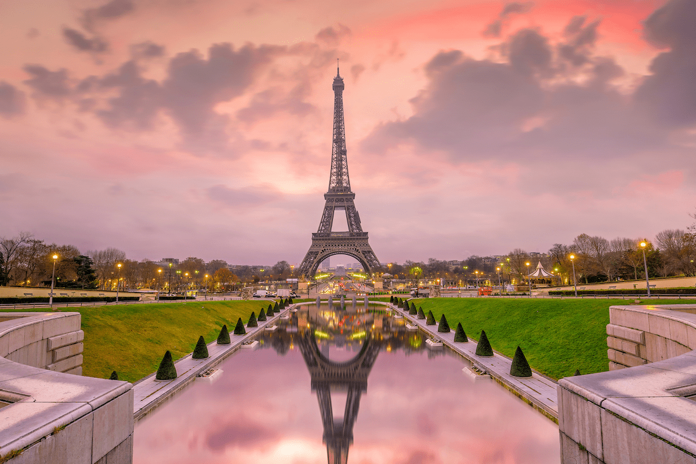
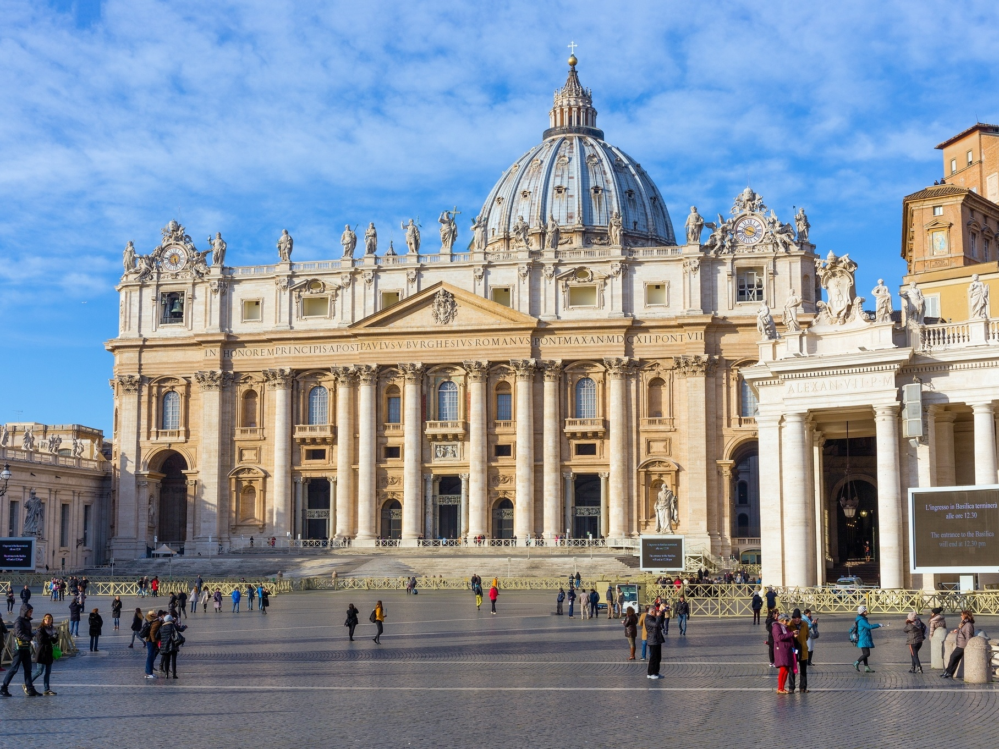
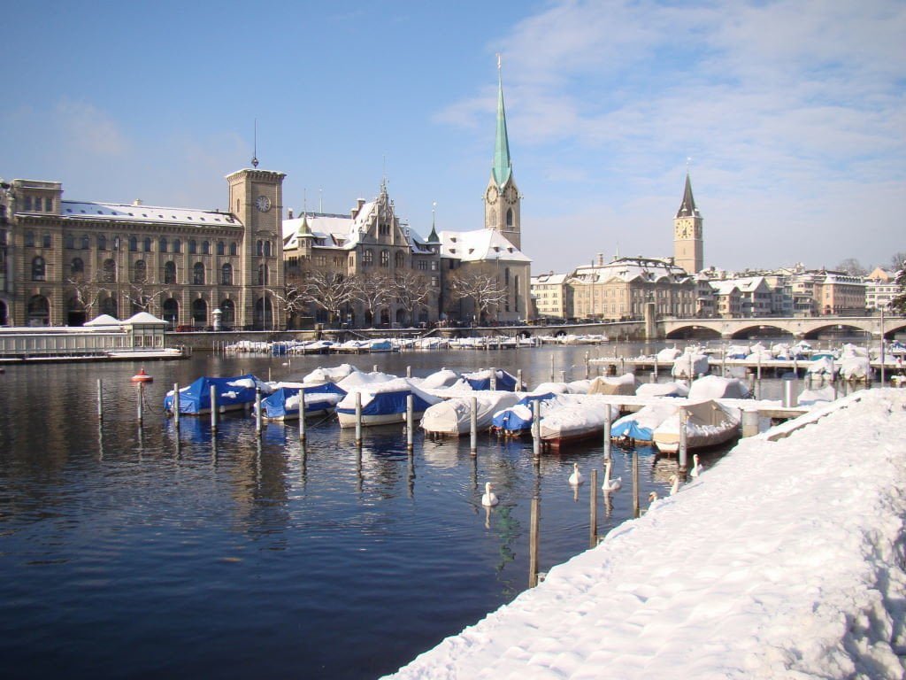

Matheus Botana
Turma: 2ºF
Sobre mim
Gosto muito de escutar Pop e R&B, sendo mes artistas favoritos o The Weeknd e a Olivia Rodrigo. Amo sair com os amigos e também de viajar, o que acaba expandindo meu conhecimento sobre novas culturas e histórias.
Os lugares dos meus sonhos
Nome dos lugares:
Paris, Londres, Vaticano e Zurique.
Por que quero conhecer esses lugares?
Depois de Nova York, a minha maior vontade na vida é de fazer uma EuroTrip, com a possibilidade de visitar todas as culturas e costumes que via, e ainda vejo, em séries e filmes estrangeiros. Paris e Londres em primeiro lugar justamente pelos pontos turísticos, Vaticano (e outros lugares da Itália) por ser um país com muita história e culinária impecável, e Zurique pela qualidade de vida e paisagens surreais.

Paris
A Capital mais visitada no mundo inteiro.

Londres
Metrópole fascinante com mais de 300 idiomas falados.

Vaticano
É o menor país independente do mundo, com apenas 44 hectares e cerca de 800 habitantes.

Zurique
A cidade tem mais de 1.200 fontes de água potável espalhadas, sendo permitindo beber água fresca em quase qualquer lugar.